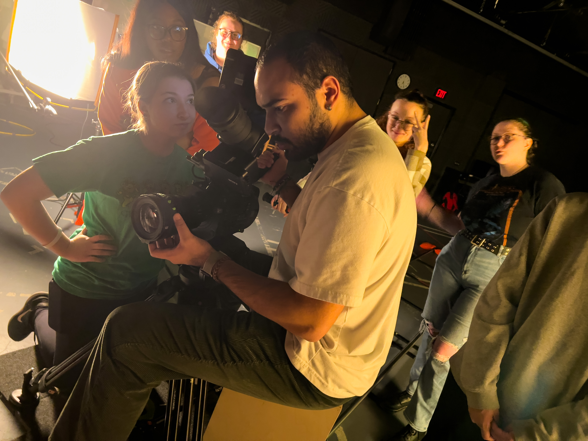
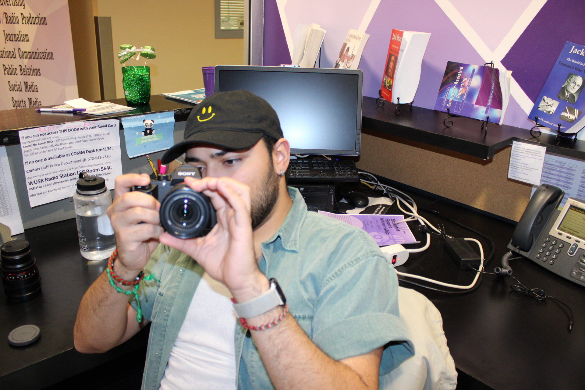

Content & Marketing Professional
Robert
Correas-Rivera
Journalism grad from the University of Scranton. Based in the Greater Philadelphia area. Fluent in content creation, social media management, and AI-assisted workflow.



My background is split between content creation and technical problem-solving. I graduated from the University of Scranton in 2024 with a degree in Journalism and Electronic Media, and my professional experience has lent itself to both sides of that.
At iPipeline I handled content support and data auditing for insurance carrier rate updates. Using AI programs like Claude, Copilot, and Gemini, I developed tools that expedite workflow and streamline processes that previously had to be done by hand. I presented that work to senior leadership as part of a broader push to get the team using AI internally. Before that, I ran social media for the University of Scranton across LinkedIn, Instagram, Facebook, and TikTok, which had over 100,000 combined followers at the time.
I've used AI to develop systems to streamline my content production, and my journalism training means I know when to step back in and make it sound like a person wrote it.